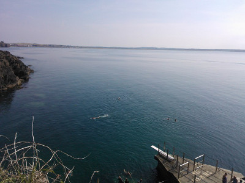

|  | |
| Description |
Both Newtown and Guillamene are small sheltered coves with deep and clear water. Newtown was traditionally the ladies bathing area and Guillamene the men’s, however both areas are now accessible for everyone and are busy spots during high tide. There is a large car park and basic toilets. A couple of seats and picnic tables overlook Newtown Cove and there is wheelchair access via a path through the Newtown woods. This beach/cove has been awarded the Green Coast Award for 2014. |
| Access | There is good access into the water via ladders and a slipway. |
| Depth | ....... |
Tomás Woods © 2014, All rights reserved.